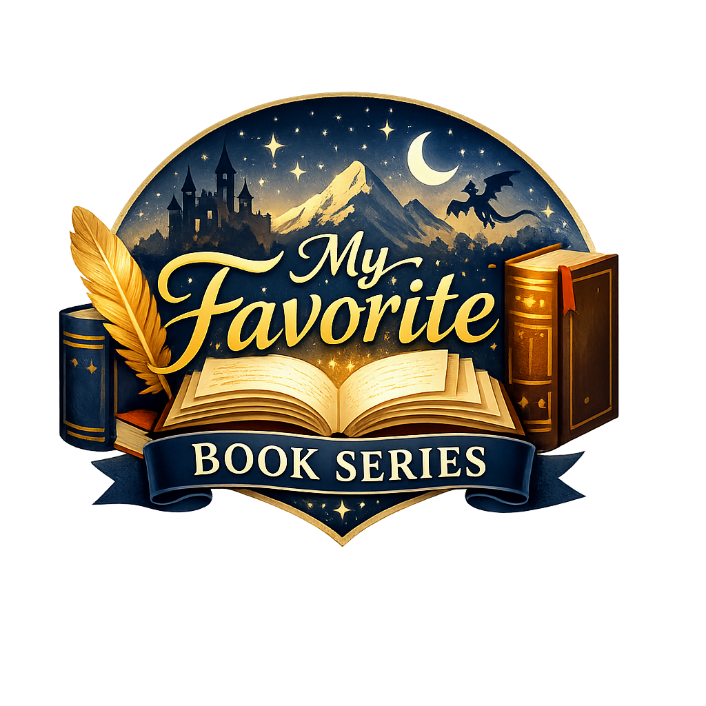

The purpose of this site is to share a select few of my all-time favorite book series that I’ve grown to love over the years. I’m hoping that through my recommendations, others will be able to grow to love and also become obsessed with these series just like I have been. I’ve shared some of these recommendations with other people, and so far, they have been a hit on every single one. So if you’re in need of a good book, look through this list and find yourself a good read. A couple of the series I list have over a dozen books so far in their series, and over 200 hours of listening time as audiobooks. I hope you enjoy!
I’ve been reading for years now, so as you might expect if I listed every single book I’ve read onto this site it would be way too long. Due to that I chose my top recommendations. Ironically enough most of these have also been my most recent reads. So once again, I hope you enjoy these since they are my absolute favorites!
I started really getting into reading when I was 10 years old. I still remember sitting in the library of a brand-new school in a foreign country during the first few weeks. I sat there and saw the cover of the last book in the Percy Jackson series as the librarian explained the synopsis of it. It sounded intriguing to me, so I asked to check it out (Yes, I was so new to books in general that I didn’t even know about the concept of a ‘series’). She explained that if I was interested in the series I should check out the first book, The Lightning Thief. This brought forth the hobby that I have loved the most in my entire life. Since then, for the last 16 years I have read so many books I have lost count. I hope that my sharing of my all time favorite book series will be able to spark in you just a small amount of the joy I have felt in my life.